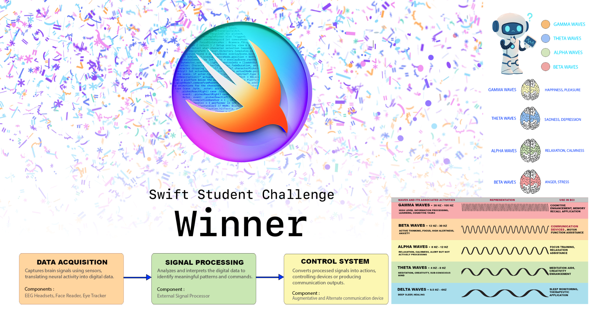

Problem Definition
Identified a two-sided marketplace gap: farmers facing limited digital reach and efficient selling channels, and consumers facing challenges discovering fresh, locally sourced produce and coordinating a cumbersome purchasing or delivery workflows.
Product Objectives
- Connect farmers and consumers through digital storefronts and product discovery.
- Support accurate product availability, pricing, ordering, and payment.
- Improve convenience and simplify delivery coordination, confirmation and fulfillment workflows.
- Improve accessibility, transparency, onboarding, and customer support.
User Research & Strategic Analysis
User Personas and pain points
Developed three role-based personas to represent different goals and workflow constraints:
- Consumer: Needs convenient produce discovery, access to fresh produce, product information, transparent and time-efficient online purchasing.
- Farmer: Needs digital storefronts, product listings, inventory updates, and broader customer reach.
- Delivery Partner: Needs clear order details, delivery instructions, navigation, and reliable delivery confirmation.
Card Sorting & Information Architecture
Organized the information architecture around key marketplace content categories to inform navigation and screen structure:
- Product discovery: Search, product categories, listings, nearby farmers, prices, and product details
- Farmer storefronts: Farm profiles, produce availability, descriptions, and cultivation information, Order acceptance
- Purchasing: Product selection, Cart, checkout, payment methods, and order details
- Delivery & fulfillment: Delivery instructions, order status, navigation, and PIN-based confirmation
- Account management: User profiles, contact information, addresses, preferences and assistance.
SWOT Analysis
- Strengths: Direct farmer-to-consumer access and farmer-specific storefronts.
- Weaknesses: Dependence on accurate inventory, reliable updates, and accessible digital workflows for farmers.
- Opportunities: Growing interest in local produce, convenient ordering, and transparent sourcing.
- Threats: Competition from established grocery and delivery platforms, alongside delivery coordination and adoption barriers.
Use-Case Modeling & Workflow Design
Developed three levels of use cases to distinguish workflow complexity levels and structure the experience and account for alternate paths:
- Core/ Heavy-weight workflows: Farmer listing and selling products, consumer payment completion, and delivery confirmation.
- Supporting/ Medium-weight workflows: Searching for products and updating profile information.
- Workflow exceptions and handling: Accounted for payment declines, failure or issues in product uploads, irrelevant search results, save errors, delivery-access problems, and unsuccessful fulfillment.
Defined actors, triggers, preconditions, primary steps, alternate flows, and postconditions to make essential interactions and recovery paths explicit in the prototype and make the proposed flows more complete.
Onboarding & Experience Design
Designed onboarding around four goals:
- Feature familiarity
- Trust establishment
- Personalization
- Adoption
Structured the experience to introduce the marketplace’s value, help users understand relevant functionality, and support different user roles. Considered accessibility and inclusivity through high-contrast options, keyboard navigation, and straightforward navigation patterns.
Feature Prioritization
Applied MoSCoW prioritization to organize the proposed feature scope around the marketplace’s essential tasks and user needs.
- Must-have: Product listings, product discovery, checkout, payment, and delivery confirmation.
- Should-have: Farmer profiles, inventory updates, customer profile management and order tracking.
- Could-have: Personalized onboarding, community engagement, accessibility options, and live customer-support capabilities.
These categories reflect a proposed prioritization of the documented feature set, rather than recorded numerical scores or a validated release plan.
Visual Identity & Design System
Established a cohesive visual language to reinforce freshness, sustainability, and local agriculture.
- Logo: Combined a semi-circular leaf motif with rectangular growth elements, using a light-to-dark green gradient to convey freshness and progress.
- Color palette: Used #69DC93 and #04773B as primary greens, supported by white, black, and a light neutral background.
- Typography: Selected Poppins with a defined hierarchy: 32 pt, 24 pt, and 20 pt headings; 16 pt and 14 pt body text; and 12 pt supporting text.
- Visual assets: Used Iconify for icons and Storyset and Unsplash assets for illustrations and imagery, maintaining a consistent visual direction.
Thus, A multi-sided marketplace concept was designed connecting farmers, consumers, and delivery partner and delivered a mobile prototype combining user research, structured use cases, prioritized functionality, a defined visual identity, and interactive user flows.